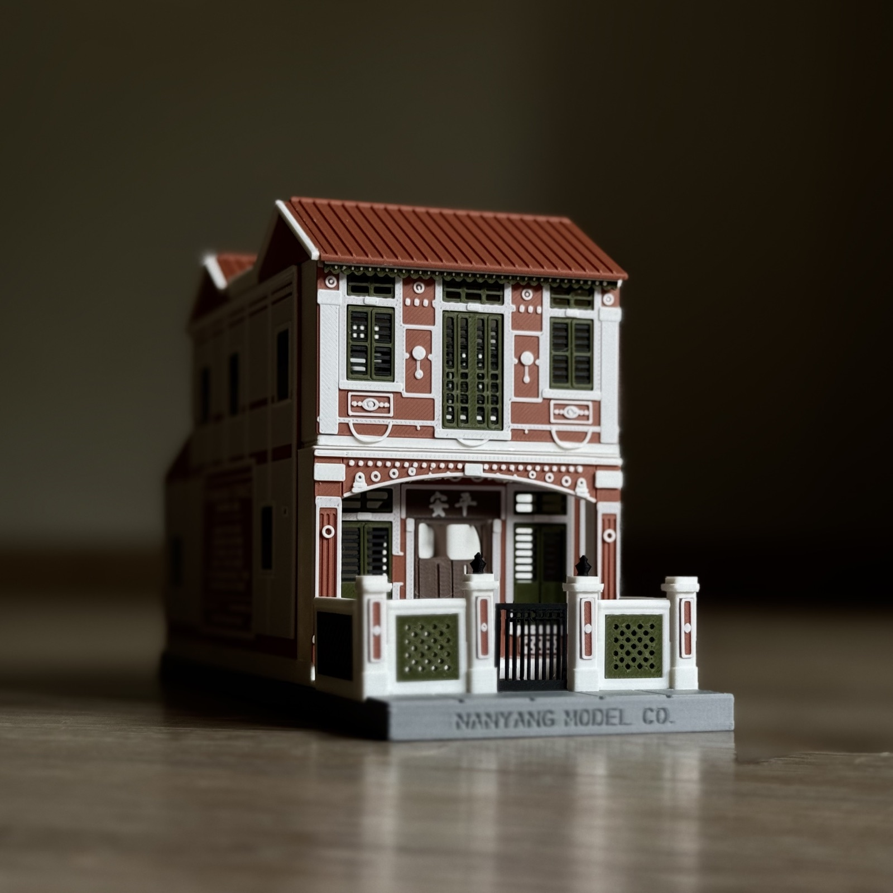

Designed and made in Singapore.
Nanyang Model Co. is a small studio in Singapore. We make keepsake models of the buildings this city grew from, the terraces and shophouses and five-foot-ways, the ordinary places that are quietly disappearing.
These streets are part of how people here grew up. As they go, we keep them as objects made to last, so a family home, a corner shop, or a building that mattered to someone can sit on a shelf and stay.
Everything is designed and produced in our own studio, and assembled by hand, here in Singapore. Nothing comes off a catalogue. Each piece is made to order and boxed like something meant to be kept for a long time.
The model houses are where we begin. The idea behind them, the architecture of this place made properly, is one we will keep making, in new forms and larger works to come.
Designed in-house · Produced in-house · Assembled by hand
